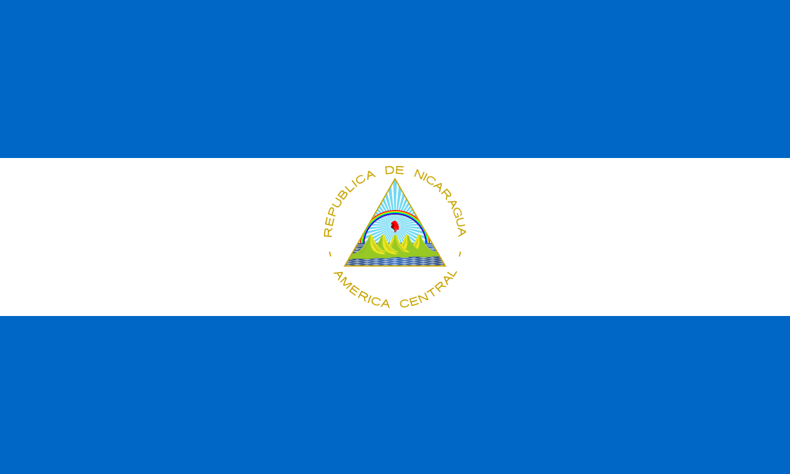
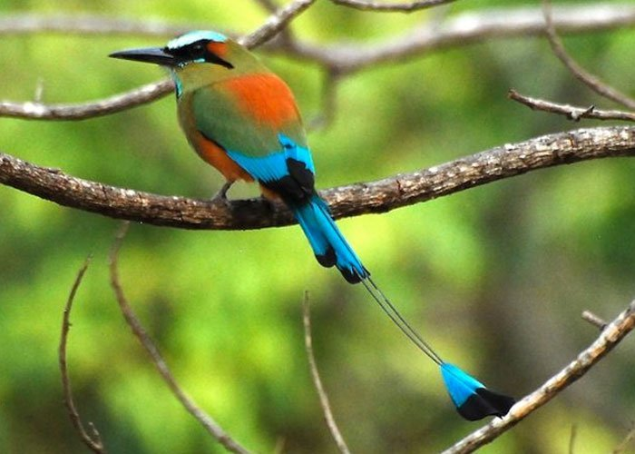

NICARAGUA
HISTORIA
La historia de Guatemala es la cronología de sucesos acaecidos desde el comienzo del primigenio
poblamiento humano en el actual territorio de la República de Guatemala hasta nuestros días. Esta
comienza con los primeros grupos de personas en habitar la región, de las que se destaca la civilización
maya.
Los conquistadores españoles llegaron a Guatemala en 1523. Hernán Cortés nombró a la ciudad de
Guatemala, en su carta de relación dirigida a Carlos V, fechada en México el 15 de octubre del 1524.
Cortés se refiere a «unas ciudades de que muchos días había que yo tengo noticias que se llaman Ucatlán
y Guatemala». La región pasó a formar la Capitanía General de Guatemala, adscrita al Virreinato de la
Nueva España.
En el siglo xix, los criollos de la Capitanía General de Guatemala lograron su independencia del Imperio
español y la región pasó a llamarse Federación Centroamericana, la cual se anexó un tiempo al imperio de
Agustín de Iturbide en México. Tras la separación de México se iniciaron las guerras entre los
conservadores —es decir, los criollos de mayor abolengo y que vivían en la capital de la federación,
conocidos también como Clan Aycinena, y el clero regular de la Iglesia católica— y los liberales, que
eran criollos de menor categoría que se dedicaban a la agricultura a gran escala y vivían en el resto de
la Capitanía General. La lucha dio lugar a la desintegración de la Federación Centroamericana, de la que
emergieron las cinco repúblicas de Centro América, entre ellas la actual Guatemala.
BANDERA
De acuerdo al decreto ejecutivo del 17 de agosto de 1871, se determinó que la bandera tuviera únicamente dos colores: el azul celeste y el blanco. La franja vertical blanca entre las dos celestes representa el hecho de que el país se encuentra entre el océano Pacífico al oeste y el mar Caribe al Este. En su centro aparece el Escudo Nacional, -que también fue modificado para remover los elementos conservadores y la fecha 21 de marzo de 1847, que corresponde a la fundación de la República de Guatemala y el fin de la Federación Centroamericana con la que habían soñado los liberales-.a El color blanco también representa la pureza, la integridad, la fe, la obediencia, la firmeza, la vigilancia, la paz y la nación. El color azul simboliza la justicia, la lealtad, la dulzura, la fortaleza, el cielo guatemalteco y los dos mares citados que bañan las costas del este y oeste del país, respectivamente, al igual que las de Centroamérica.
AVE
El 5 de septiembre se conmemora el Día Nacional del Quetzal, símbolo patrio según lo establecido en el Decreto No. 33 del 18 de noviembre de 1871, donde fue declarado como Ave Nacional de Guatemala. El quetzal es reconocido por su largo plumaje.
ÁRBOL

La Ceiba, el árbol nacional de Guatemala, es orgullo de raíces mayas. La Ceiba Pentandra, es el árbol Nacional de Guatemala. Simboliza el orgullo de nuestras soberanas raíces Mayas, el 8 de marzo de 1955 el coronel Carlos Castillo Armas firmo un Acuerdo gubernativo.
FLOR

Cada 11 de febrero, en Guatemala se celebra el Día de la Monja Blanca ya que en esta fecha pero en 1934 el Presidente Jorge Ubico emitió un decreto para otorgar a esta orquídea, el título de Flor Nacional.
ESCUDO

El escudo de Guatemala es el emblema e insignia suprema de la República de Guatemala junto a la bandera nacional y ha sufrido transformaciones desde incluso antes de la creación de la república el 21 de marzo de 1847.1 Originalmente fue creada por el gobierno conservador del general Rafael Carrera y Turcios. 1 basado en la propuesta del obispo Juan José de Aycinena y Piñol y otros miembros del Clan Aycinena quienes querían enfatizar la influencia conservadora en Guatemala manteniendo elementos españoles en la bandera.2 Tras la muerte de Carrera y de los principales miembros del clan Aycinena entre 1860 y 1865 la influencia conservadora se debilitó en Guatemala y su gobierno fue finalmente derrocado por la revolución liberal el 30 de junio de 1871 dirigida por Miguel García Granados y Justo Rufino Barrios, quienes entre sus primeros decretos modificaron la bandera y escudo de Guatemala para eliminar las referencias conservadoras.
DEPARTAMENTOS
La división política de Nicaragua, está basada en 17 departamentos ubicados de la siguiente manera: Los de la Región del Pacífico son:
- Los de la región del pacífico son:
- Chinandega
- León
- Managua
- Carazo
- Masaya
- Granda
- Rivas
- Los de la Región Central son:
- Nueva Segovia
- Madriz
- Estelí
- Jinotega
- Matagalpa
- Boaco
- Chontales
- Río San Juan
- Los de la Región del Caribe o Costa Atlántica son
- Atlántico norte
- Atlántico sur